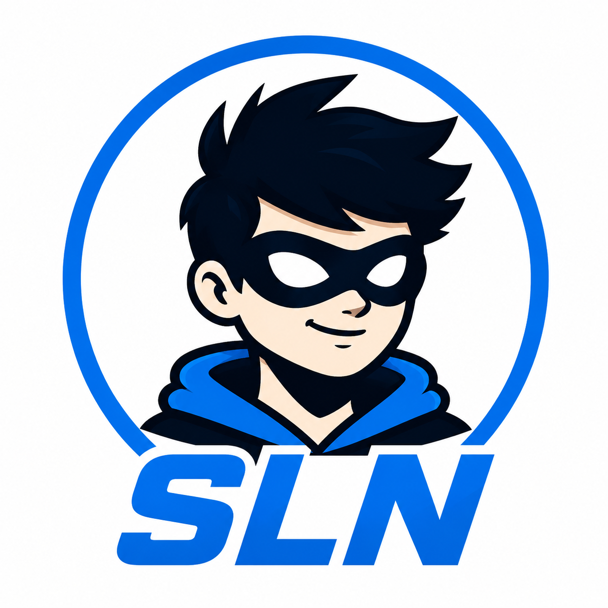

Misiunea noastră
Cunoaștere, nu teamă
Nu vindem servicii de securitate și nu vorbim doar specialiștilor. Construim o platformă publică pentru oamenii care vor să folosească tehnologia cu mai multă încredere.
Cine suntem
Siguranța la Negru transformă subiectele digitale complicate în explicații clare, practice și prietenoase.

Misiunea noastră
Nu vindem servicii de securitate și nu vorbim doar specialiștilor. Construim o platformă publică pentru oamenii care vor să folosească tehnologia cu mai multă încredere.
Cum lucrăm